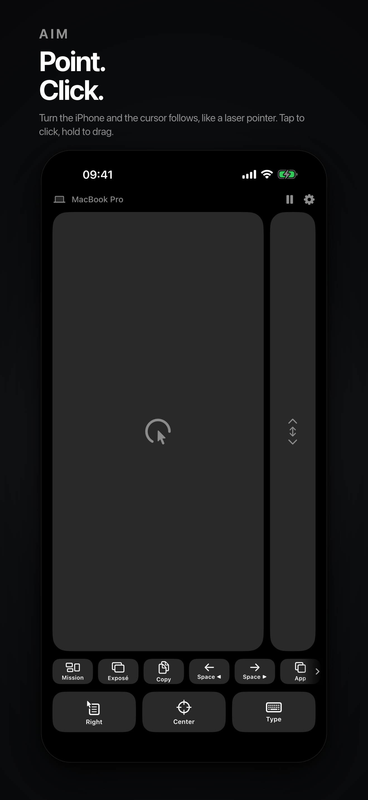
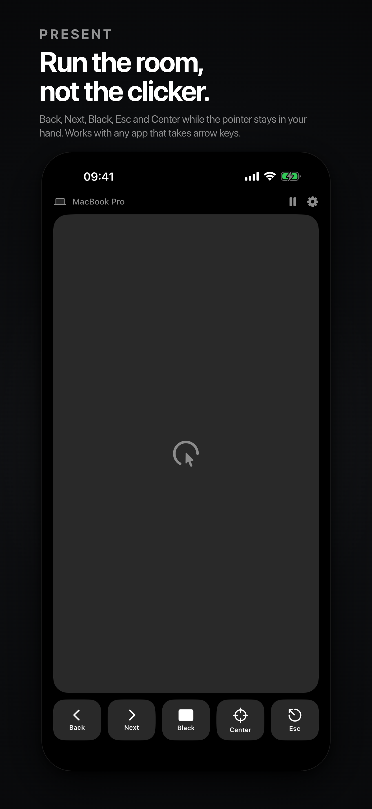
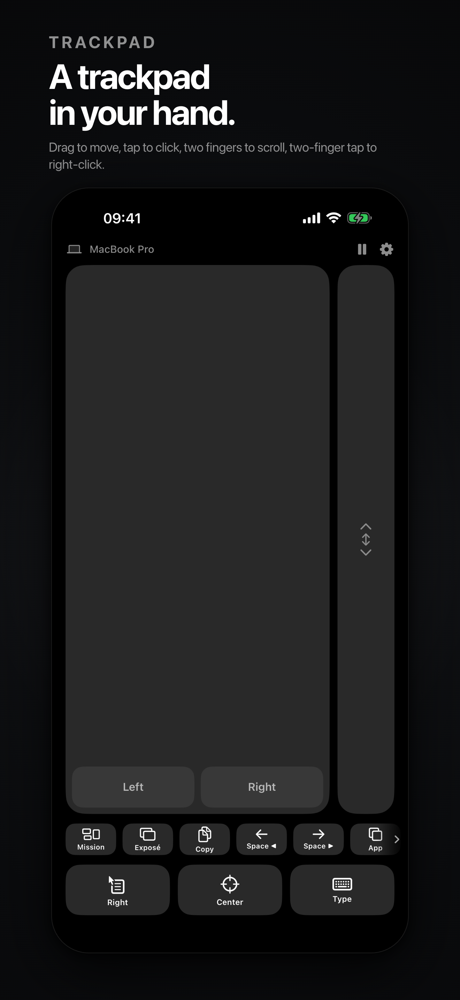

Point at the screen and the cursor follows, like a laser pointer. Tap to click, hold to drag, two fingers to scroll. Over Bluetooth, with no account and no cloud.
The companion app is free. macOS 14 or later, or Windows 10/11 with a Bluetooth LE adapter.



iPhone with iOS 17 or later. A Mac with macOS 14 or later, or a PC with Windows 10/11 and a Bluetooth LE adapter. The companion app is a free download for both.
On the Mac, Air Pointer needs Bluetooth and Accessibility permissions. On Windows, the plain build needs a PC where the Bluetooth LE server can run; a few machines need the packaged (MSIX) build instead.
Accessibility permission is missing: System Settings › Privacy & Security › Accessibility › enable Air Pointer, then reopen the app.
They are posted through System Events. The first time macOS asks “Air Pointer wants to control System Events”: allow it. If you denied it, re-enable it in System Settings › Privacy & Security › Automation.
It pauses when you use the computer's own mouse or trackpad, and when the phone app goes to the background. Press Resume on the phone, in the menu bar, or in the notch island.
iOS suspends motion updates in the background, so keep the app open with the screen on while you use it.